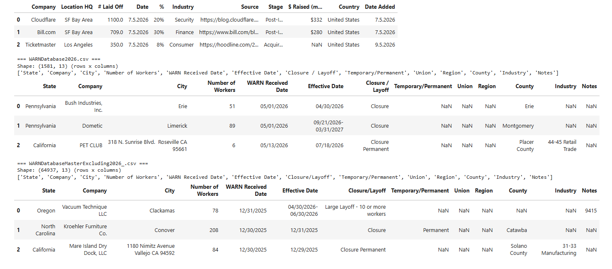
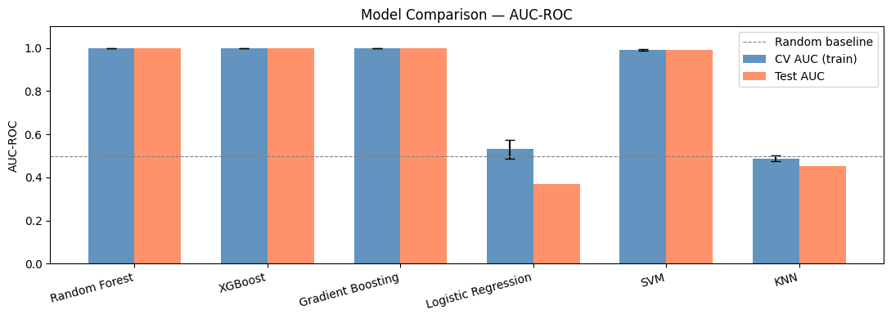
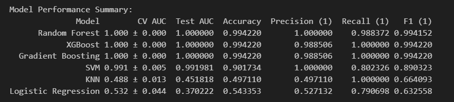

Layoff Detector
Is your job burning? We can smell it from a mile away. Let us introduce our tool that may warn you before layoffs happen.
The Question
Why should we care about predicting layoffs in the first place?
Alex's Story: What a Layoff actually means
Day Zero
On a sunny Tuesday 9:13 a.m, A calender invite titled "Quick Sync" appears in Alex's calendar.
By 9:15 a.m, Alex, a 50-year-old family father and a software engineer by heart, is sitting in front of his laptop, waiting for the meeting to start. The meeting starts and Alex's manager informs him that he is being laid off. Alex is shocked and confused. He has been working at the company for 25 years and has never received any negative feedback before. He worked in the company through good and bad times. He knows every client by name, every project inside out, and has been a loyal employee for years. HR call it "restructuring" and by lunch, Alex is packing his things and leaving the office for the last time, with his stuff stuffed inside a tiny cardboard box. He is now left with no job, no income, and no idea what to do next.
After one Month
The health insurance that covers his wifes ongoing cancer treatment will be terminated. Fortunatly, Alex has some savings, but they are not enough to cover the medical expenses and the mortgage for a longer period of time. While financial aid exists on paper, it's not enough to cover all expenses, especially for a family of four. The stress and anxiety of not knowing how to pay for his family's needs is taking a toll on Alex's mental health. He needs to ask for help from his friends and family, but he feels ashamed and embarrassed to do so. But there is no other option, and he has to swallow his pride and reach out for help.
After Three Months
Alex is struggling to make ends meet with gigs, the savings are running low, and the bills are piling up. He is working forty, fifty, sixty hours a week to keep everything together writing applications and supporting his wife, most applications are answered with silence or a templated rejection email. His identity and self-worth build over decades as "the guy who can fix anything" , "the guy people call when they face a problem they can not solve", "the one that gets things done" is now shattered. He stopped mentioning the search to colleques and friends, since you can only say "still looking" so many times ... His 17-year-old daughter is now working part-time on minimum wage to help support the family, but her grades are slipping, and she is struggling to keep up with schoolwork. His 9-year-old son is understanding that something is wrong, they are saving money and trying to help out, but he is too young to understand the full extent of the situation.
After Six Months
Alex finally finds a new job, but it's not in his field. He is working longer hours for less pay, and he is not satisfied with the work he is doing, but it pays the bills. At least his current job provides health insurance and he can now afford his wife's treatment and his mortgage, but he is still paying off credit card debt. Repaying the depts will take a long time, not even thinking about saving for his children's education or retirement. During this time, he thought about "ending it all" but only the thought of his family kept him going.
The Statistics about Layoffs we need to keep in Mind
SRC needs to be checked for accuracy and updated if necessary.
How could we help?
For some people, getting out of bed some mornings is the hardest thing on their list. People are not just numbers, they are human beings with families, responsibilities, and dreams. Getting laid off is not just a financial setback, it is a life-altering event that can have long-lasting effects on a person's mental health, relationships, and overall well-being. Someone with a family, with a mortgage, with a sick spouse, with children, with dreams and aspirations, can be completely derailed by a layoff. Here is where we come in, we want to help people like Alex, who are facing the uncertainty and stress of a layoff. Many people get blindsided by layoffs, and they are left with no time to prepare, no time to save, and no time to find a new job. If we can predict layoffs, we can give those people a chance to prepare... With enough time to save, to find a new job, to plan for the future, and to protect their and their family's mental health and well-being.
Therefore we ask the following questions:
RQ 1: Based on publicly available information, is it possible to predict whether a company had or is likely to have layoffs?
RQ 2: Assuming we are able to predict layoffs with public available information, can we also predict layoffs in a 3 - 6 month timeframe?
We followed the standard data pipeline defined in the lecture.
graph LR
A["fyi_layoffs.csv - DD.MM.YYYY"]
B["WARNDatabase2026.csv - DD/MM/YYYY"]
C["WARNDatabaseMasterExcluding2026.csv - MM/DD/YYYY"]
NORM["Parse dates, normalize schema and merge into one dataset"]
A --> NORM
B --> NORM
C --> NORM
D["NASDAQ.csv"]
FT["Fetch tickers"]
D --> FT
UP["Uppercase company names"]
INT["Remove overlap data"]
NORM --> UP --> INT
subgraph VERT[" "]
direction TB
TICK["Remove companies without tickers"]
BAD["Filter bad or shared tickers"]
FETCH["Fetch data from yfinance"]
FIN["Merge financial data - features and quarters"]
LABEL["Label layoff 1 or 0"]
O1["tickers"]
O2["features"]
O3["label (0/1)"]
TICK --> BAD --> FETCH --> FIN --> LABEL
LABEL -.-> O1
LABEL -.-> O2
LABEL -.-> O3
LABEL -->|feedback loop| TICK
end
INT --> FT
FT --> TICK
Dataset
| Dataset Name | URL | Description |
|---|---|---|
| Layoffs FYI | https://layoffs.fyi/ | Crowd-sourced tracker (global, many industries) |
| WARN Data | https://web.archive.org/web/20260509102542/https://layoffdata.com/data/ | US WARN-act filings for 2026 |
| NASDAQ | https://github.com/datasets/nasdaq-listings | US WARN-act filings up to end of 2025 |

Methods of data Collection
Our analysis incorporates data from three primary sources: Layoffs FYI, NASDAQ, and WARN (Worker Adjustment and Retraining Notification) data.
NASDAQ and WARN data were obtained via direct CSV downloads and processed using the yfinance library for financial data retrieval. Website content was converted to PDF format for archival purposes.
Note on WARN Data Accessibility: While WARN data from layoffdata.com is currently behind a paywall (USD 2,000), this information remains legally accessible through official state records.
Data Pipeline
The flowchart above guides you on the main files and stages of our data pipeline. Please check the corresponding files in our codebase for more implementation details.
flowchart TD
subgraph DataRoot["OSINT and DATA Pipeline (layoff detector)"]
Z[Direction] --> B[Collection] --> P[Processing] --> A[Analysis] --> E[Dissemination]
P -->|feedback loop| B
subgraph Order_Collection ["Data Collection Order"]
I["pdf_to_csv.ipynb"] --> H["get_finance_data.ipynb"]
end
subgraph Order_Processing ["Processing Order"]
J["fix_ticker_conflicts_and_relabel.ipynb"] -.-> K["label_layoff.ipynb"]
K --> L["generate_layoffs.ipynb"]
L --> M["merged_bs_cs_fd.ipynb"]
end
subgraph Order_Analysis ["Analysis Order"]
N["ml_test.ipynb"]
end
P -.-> J
A -.-> N
B -.-> I
end
Data Wrangling (Data Processing)
Our analysis focuses on three datasets: fyi_layoffs.csv (DD.MM.YYYY), WARNDatabase2026.csv (DD/MM/YYYY), and WARNDatabaseMasterExcluding2026.csv (MM/DD/YYYY). Due to inconsistent date formatting across sources, we normalize all dates to the ISO 8601 standard format (YYYY-MM-DD) to ensure accurate sorting and temporal comparisons.

Example of data representation for this step:
The next step is to merge all these data. It should look
The next step was data normalization:

Sample result of the normalisation:
 After the normalisation step, we capitilized the companies name as illustrated the image bellow:
After the normalisation step, we capitilized the companies name as illustrated the image bellow:
 This will help us to map with the tickers (short companies name) that come from a different source.
However, before we move on, because there are a finite amount of companies, name in both files can coincide and we therefore ave to fix such overlaps and consider only the distinct set.
To avoid double-counting, we remove rows from the FYI source that have overlaps with WARN data. WARN data is more authoritative since companies are required by law to publish it, so we keep the WARN records and discard the FYI duplicates.
Next we do a search witha regex to find similar company names (stemming)
This will help us to map with the tickers (short companies name) that come from a different source.
However, before we move on, because there are a finite amount of companies, name in both files can coincide and we therefore ave to fix such overlaps and consider only the distinct set.
To avoid double-counting, we remove rows from the FYI source that have overlaps with WARN data. WARN data is more authoritative since companies are required by law to publish it, so we keep the WARN records and discard the FYI duplicates.
Next we do a search witha regex to find similar company names (stemming)

To make things simpler, we work with tickers instead of company names. Companies without tickers are removed from the dataset. Additionally, we filter out invalid tickers, as different companies may share the same ticker symbol.
Next, we merge all financial data and transform the raw data into meaningful financial features.
In the final step, we label each layoff event as either 0 or 1, indicating the presence or absence of evidence for a prediction.
NOTE:
Please familiarize yourself with the following key terms:
- Ticker: A short code identifying a company (e.g., ADS = Adidas)
- Financial Statement: A report showing what a company earned, owns, and owes
- Financial Feature: A specific condition or characteristic found in a metric used to measure performance
All data processing steps can also be visualized as a flowchart.
For more details, please refer to the source code available at: [path]
graph TD
subgraph PDF_Extraction ["PDF to CSV Pipeline"]
PDF_INPUT[/"data/raw/layoffs.pdf"\]
READ_PDF[Read PDF Content]
PARSE_PDF[Extract Table Data]
SAVE_RAW[Save to folder data/raw]
RAW_CSV[("data/raw/fyi_layoffs.csv")]
end
subgraph Data_Cleaning ["Data Cleaning & Deduplication"]
CLEAN_START([Start Cleaning])
REMOVE_OVERLAP[Remove Overlapping Records]
MERGE_NAMES[Merge Similar Company Names]
STRING_SIMILARITY[Merge Closely Related Strings]
CLEANED_CSV[("cleaned_layoffs.csv")]
end
subgraph Finance_Pipeline ["get_finance_data Pipeline"]
SEARCH_TICKERS[Search Tickers via yfinance.Search]
DROP_MISSING[Drop Rows without Tickers]
TICKERS_CSV[("LAYOFFS_WITH_TICKERS_CSV_PATH")]
subgraph Data_Fetch ["Parallel Data Fetching"]
FETCH_CASHFLOW[Fetch Quarterly Cashflow]
FETCH_FINANCIALS[Fetch Quarterly Financials]
end
CASHFLOW_STORAGE[("CASHFLOW_DIR/*.csv")]
FINANCIAL_STORAGE[("FINANCIAL_DATA_DIR/*.csv")]
end
PDF_INPUT --> READ_PDF
READ_PDF --> PARSE_PDF
PARSE_PDF --> SAVE_RAW
SAVE_RAW --> RAW_CSV
CLEAN_START --> REMOVE_OVERLAP
REMOVE_OVERLAP --> MERGE_NAMES
MERGE_NAMES --> STRING_SIMILARITY
STRING_SIMILARITY --> CLEANED_CSV
CLEANED_CSV --> SEARCH_TICKERS
SEARCH_TICKERS --> DROP_MISSING
DROP_MISSING --> TICKERS_CSV
TICKERS_CSV --> FETCH_CASHFLOW
TICKERS_CSV --> FETCH_FINANCIALS
FETCH_CASHFLOW --> CASHFLOW_STORAGE
FETCH_FINANCIALS --> FINANCIAL_STORAGE
subgraph Main_Project ["Project: layoff-detector (root)"]
START([start_point: generate_layoff])
end
subgraph PDF_Extraction ["PDF to CSV Pipeline"]
PDF_INPUT[/"data/raw/layoffs.pdf"\]
READ_PDF[Read PDF Content]
PARSE_PDF[Extract Table Data]
SAVE_RAW[Save to folder data/raw]
RAW_CSV[("data/raw/fyi_layoffs.csv")]
end
subgraph Data_Ingestion ["Data Ingestion"]
FILE_A[(File fyi_layoffs.csv)]
FILE_B[(File WARNDatabase2026.csv)]
FILE_C[(File WARNDatabaseMasterExcluding2026_.csv)]
CONV_LIST[Convert to List]
SHOW_DATA[Display Data]
PARSE_FORMAT[Parse Format]
end
subgraph Preprocessing ["Data Preprocessing"]
DATE_TRANSFORM[Transform Date: DD.MM.Y to YY.MM.DD]
NORMALIZE[Normalize Data]
JOIN_FILES[Join into Single File]
end
subgraph Data_Cleaning ["Data Cleaning & Deduplication"]
REMOVE_OVERLAP[Remove Overlapping Records]
MERGE_NAMES[Merge Similar Company Names]
STRING_SIMILARITY[Merge Closely Related Strings]
end
subgraph Output ["Final Output"]
FINAL_GEN[Generate Final File]
RESULT[(final_layoffs.csv)]
end
PDF_INPUT --> READ_PDF
READ_PDF --> PARSE_PDF
PARSE_PDF --> SAVE_RAW
SAVE_RAW --> RAW_CSV
RAW_CSV --> FILE_A
START --> FILE_B
START --> FILE_C
FILE_A --> CONV_LIST
FILE_B --> CONV_LIST
FILE_C --> CONV_LIST
CONV_LIST --> SHOW_DATA
SHOW_DATA --> PARSE_FORMAT
PARSE_FORMAT --> DATE_TRANSFORM
DATE_TRANSFORM --> NORMALIZE
NORMALIZE --> JOIN_FILES
JOIN_FILES --> REMOVE_OVERLAP
REMOVE_OVERLAP --> MERGE_NAMES
MERGE_NAMES --> STRING_SIMILARITY
STRING_SIMILARITY --> FINAL_GEN
FINAL_GEN --> RESULT
Where It Came From
Every dataset has a story. Tell it at a high level — no list of dataframe calls — and be upfront about anything (like API limits) that constrained you.
Source & method
[Where did the data come from? Why does it fit the question? Mention scope, time range, and any access constraints — flag anything like API changes that limited what you could gather.]
Cleaning & shaping
[What state was the raw data in, and what did you do to it? Explain decisions that could affect the results — dedup, filtering, missing data handling — so a reader trusts what follows.]
Who This Affects
"It's public data" is not an ethics discussion. Name the stakeholders, the risks, and what you actually did to limit harm.
Stakeholders & risk
Who could be affected by this project — directly or indirectly — and how?
aaaaaaaaa
aaa aaaaaa
What you did about it
[What concrete steps limited harm — anonymization, aggregation, exclusion of certain data, access controls? Be specific, not aspirational.]
What You Did, What It Shows
Justify the method, then be honest about the results — including what they don't tell you.
Our approach [draft]
To address our reasearch questions, we formulate layoff prediction as supervised binary classification (layoff or non-layoff) using quarterly company financial data, including balance sheet, financial data and cashflow. After processing, the dataset contains approximately 30,000 company-quarters across 5,381 companies. The dataset for the first research question (RQ1) is balanced, with approximately 12,047 positive layoff rows and 17,971 negative non-layoff rows. However, the dataset for the second research question (RQ2) is more imbalanced, with approximately 1,205 positive layoff rows and 28,813 negative non-layoff rows. Each row in our dataset represents a single company in a single quarter, with features derived from the company's financial statements and the target variable indicating whether a layoff occurred in that quarter or the next.
We compared seven supervised learning algorithms representing both linear and non-linear families: Logistic Regression, Random Forest, Gradient Boosting, XGBoost, SVM, KNN, and a Decision Tree. Since the relationship between financial indicators and layoffs is unlikely to be purely linear, tree-based ensemble methods were included to capture more complex interactions among the features.
All models are trained using the same preprocessing pipeline to ensure a fair comparison.
Missing numberical values are imputed with the median value for each feature, and binary missingness indicators are added because
the absence of financial data itself may contain helpful information. Moreover, the features no variance are dropped,
and stadardization is applied to ensure that all features contribute equally to the model's learning process.
Model performance is evaluated using stratified 5-fold cross-validation together with a held-out test set. [SF: PLS EXPLAIN WHAT THAT MEANS] Because layoffs represent only about 4% of the observations, both ROC-AUC and Precision-Recall AUC are reported to provide a more informative evaluation for highly imbalanced classification problem.
To prevent data leakage, all variables related to the target label, including the company's name, tickers, and any other identifiers, are excluded fromt he feature set before training. In addition, the classification threshold is optimized using the F-beta score with beta=0.5, which prioritizes precision over recall to minimize false positives. Although this may reduce the number of detected layoffs, it produces prediction that are more reliable for users and can be adjusted depending on the intended applications.
Results, with appropriate skepticism
Our first pass, on a small hand-assembled sample (861 rows), returned suspiciously perfect scores — ROC-AUC of 1.00 for Random Forest, XGBoost, and Gradient Boosting. We traced this to a bug, not a discovery: the "no layoff" rows were synthetic negatives resampled from a single duplicated company profile, so the models had learned to recognize that one company rather than any real layoff signal. We're flagging it here rather than quietly dropping it, because it's the kind of mistake worth being visibly honest about.


Once we rebuilt the negative class from real company-quarters and scaled to the full dataset (~30,000 company-quarters across 5,381 companies), RQ1 held up: XGBoost reached test ROC-AUC 0.975 (accuracy 0.92, precision 0.91 / recall 0.89 on the layoff class). The strongest features were liquidity and leverage signals — net income from continuing operations, payables & accrued expenses, current liabilities, accounts receivable, total capitalization — which lines up with financial intuition rather than looking like an artifact.


RQ2 — predicting a layoff in the same or next quarter, the framing that would actually let someone act early — is a much harder problem. Because true positives are only ~4% of rows, accuracy is a misleading headline number (~0.95, driven almost entirely by the majority class). Our best model here, Random Forest, reached test ROC-AUC 0.87, but precision and recall on the layoff class itself were only 0.41 and 0.28 (F1 0.33) before threshold tuning.
Read plainly: financial fundamentals carry a real, learnable signal for "does this company's profile resemble one that has layoffs" — but we cannot yet reliably answer "will it happen in the next one to two quarters" from public financials alone. Many real layoff triggers (leadership decisions, M&A, strategic pivots) simply aren't visible in balance-sheet numbers months in advance. Our latest pipeline iteration deliberately trades recall for precision via threshold tuning, on the view that a confident false alarm damages trust more than a missed one — but that run currently fails before producing metrics: the imputer is fed a raw ticker column and errors out trying to average a string. Until that's fixed, the untuned RQ2 numbers above are the ones to trust.
SF: it would be nice to explain the top 10 features of XGBoost here
Show, Don't Just Tell
A picture should be worth 1000 words here — clear, labelled, and honest about what it shows. Drop your charts and screenshots into the slots below.
RQ1: Based on publicly available information, is it possible to predict whether a company had or is likely to have layoffs?
Yes!
We are able to predict a companies likelihood of having layoffs with 97% accuracy. Accuracy in this context is represented by the ROC- AUC which depicts true positive + true negative / total possible outcomes. Below is an image showcasing ROC- AUC accuracy based on the top performing model; \bold{XGBoost}. For a more detailed view on how we got to choosing this model, please refer to the analysis section.

This image is a represenative depction of the XGBoost models accuracy. Every point is a company in a given time period with their respective predictions. The X-axis represents the trained models predictions, while the Y-axis is representative of the actual outcomes from the collected data. Following the resulting 97% accuracy of the XGBoost model, the image demonstrates the majority of the model's prediction aligns with the actual outcome true positive true negative (add actual values). This means only 3% of the outcomes were false positives or false negatives.
Bora to add secondary confusion matrix for more context to models performance accueracy PLUS time permitting top 10 feature overview
RQ2: If so, is it possible to predict it in a 3-6 month timeframe?
Nope!
Explain why it is not possible to predict layoffs in a 3-6 month timeframe. Tim's notes: No, more data is needed. When filtering in the timeframe, we get a heavily one sided dataset with 20: 1 ratio. Models are not able to overcome this
This image is a represenative depction of the XGBoost models accuracy. Every point is a company in a given time period with their respective predictions. The X-axis represents the trained models predictions, while the Y-axis is representative of the actual outcomes from the collected data. Following the resulting 97% accuracy of the XGBoost model, the image demonstrates the majority of the model's prediction aligns with the actual outcome true positive true negative (add actual values). This means only 3% of the outcomes were false positives or false negatives.
Bora to add secondary confusion matrix for more context to models performance accueracy PLUS time permitting top 10 feature overview